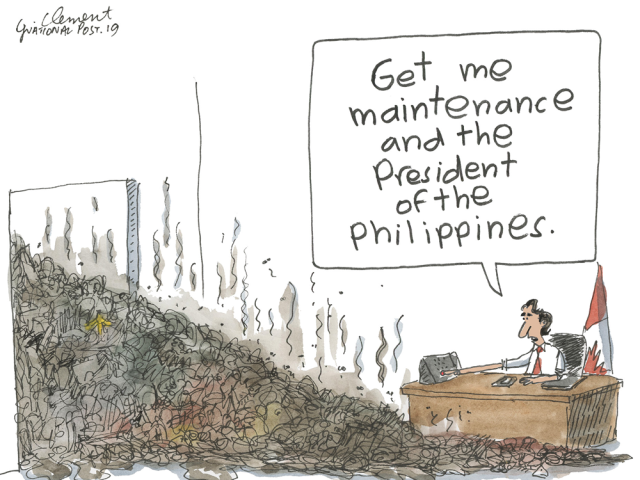

In the 80s, the first studies on environmental racism have been done in the United-States and it was found that Afro-American communities, as well as other minorities and poor neighborhoods, were more likely to be situated in areas where manufacturers, garbage dumps or hazardous materials landfills were common (Séguin & Apparicio, 2013 ; Lumen : Sociology, s.d.). Since then, researchers have analysed deeper the phenomenon and different definitions and types of justice have been developed.

The term environmental racism is used to describe discriminatory situations of environmental natures against certain groups of people that result in health problems (Lumen : Sociology, s.d.). It is important to note that this discrimination can be on purpose, but is mostly not on purpose (Fondation canadienne des relations sociales, 2015). However, after a prejudicial incident, the non-action of a government can be badly perceived, as it was the case with the water crisis in Flint, Michigan. The North-South context has also been analysed and outrageous disparities have been revealed. Nowadays, with the ongoing question of climate change, environmental racism has also been linked to global warming and its effects, and it has been found that because of economical difficulties these communities are also the ones that are the least resilient against climate change. In most cases, it is rarely the ones affected by pollution that actually pollute.
Based on those studies, several maps have been made and we thought that it would be great to evaluate the same phenomenon here in Canada. Thereby, this site has as its purpose to enlighten environmental racism in Canada in order to establish measures and laws that will lead to environmental justice across the country.
On this site, you will find two different maps. Both of them present the same social aspects, such as income per district or visible minority per district, but the first one is focused on pollution while the second on natural phenomena (that can be caused by human activities). We also added data based on what Canadian government called Climate Action, a federal funding that is attributed to projects that have for objectives prevention or mitigation of climate change (Gouvernement du Canada, 2019).